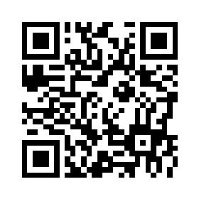
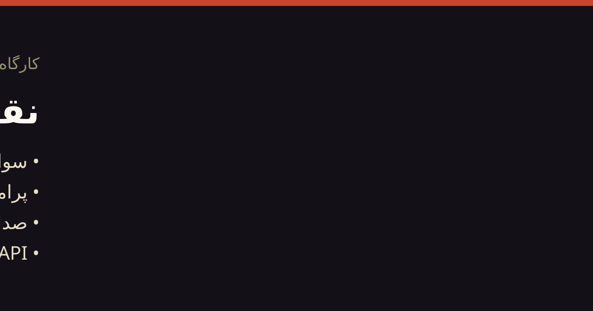

ماژول ۱
m1
سواد AI و استفاده مسئولانه
مدل را بشناس، نه فقط نامش را
درک عملی مدلهای مولد، تواناییها، محدودیتها، خطاها و ملاحظات اخلاقی و حریم خصوصی.
ChatGPTGeminiمدلهای open-weightچکلیست اعتبارسنجی
اینها بیشترین هماهنگی را با پاسخهایت داشتند. میتوانی همین ترکیب را نگه داری یا در صفحه ماژولها دستی تغییر بدهی.
مدل را بشناس، نه فقط نامش را
درک عملی مدلهای مولد، تواناییها، محدودیتها، خطاها و ملاحظات اخلاقی و حریم خصوصی.
از پرسش خام تا گردشکار قابل تکرار
تعریف مسئله، طراحی دستور، افزودن زمینه و استفاده انتقادی از مدل برای مطالعه و پژوهش.
روایت چندرسانهای
ساخت محتوای صوتی و ویدیویی کوتاه با ترکیب ابزارهای ویرایش سنتی و قابلیتهای AI.
مدل را وارد نرمافزار کن
اتصال برنامه به مدل زبانی از طریق API و ساخت تعامل قابل کنترل با خروجی ساختاریافته.
۱۵ نشست: کارگاه صفر، هسته مشترک، هشت نشست ماژولها، استودیوی پروژه و Demo Day.


شناسه نتیجه: demo